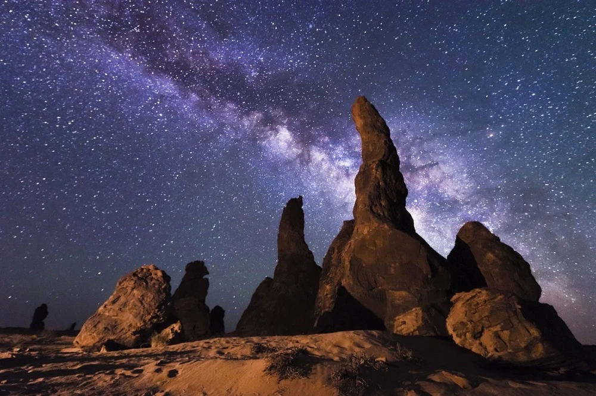
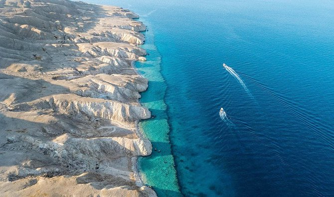

جبل السودة
السودة هو أعلى جبال المملكة العربية السعودية ضمن سلسلة جبال عسير،ويكسو الجبل أشجار العرعر الكثيفة مكونة غابات طبيعية.

الجبل الاخضر
يُعرف باسم جبل ذرة في مدينة أبها عاصمة منطقة عسير الواقعة في جنوب المملكة العربيّة السعوديّة، وهو يُعتبر واحداً من أهم وأبرز الوجهات السياحيّة في المدينة

جبل اللوز
هو جبل يقع في شمال غرب المملكة العربية السعودية قرب الحدود الأردنية في منطقة تبوك , ويسمى بجبل اللوز لوجود شجر اللوز به قديم,وتنتشر بالمنطقة الرسوم الصخرية التي يرجع تاريخها حوالي 10.000 سنة قبل الميلاد،

جبل القارة
يُعرَف أيضاً بجبل الشبعان يقع بين قرية التويثير وقرية القارة بمحافظة الأحساء، في المنطقة الشرقية من المملكة العربية السعودية. يُعد الجبل من أبرز المعالم السياحية الطبيعية في الأحساء

جبل عكمة
هو أحد جبال المملكة العربية السعودية، يقع في منطقة المدينة المنورة، وتحديدًا في محافظة العلا، وهو ضمن مرتفعات جبال العلا، المتميزة بألوانها وأشكالها المتنوعة، يصنف ضمن أكبر المكتبات المفتوحة في الجزيرة العربية؛ كونه يضم المئات من النقوش الأثرية والمنحوتات الحجرية التي تم تدوينها منذ آلاف السنين

الغراميل
هي منطقة جبلية في شمال غرب المملكة العربية السعودية، في محافظة العلا باتجاه منطقة تبوك التي تبعد عنها 300 كيلومتر، فهي تكوينات صخرية حمراء ذات أشكال متفاوتة نحتتها الرياح على مر الأزمان لتصبح أيقونة فريدة في مشهد صحراوي ساحر، وهي من المناطق المرتفعة التي يمكن رؤية مجرة درب التبانة بوضوح من خلالها.

صخرة الفيل
هو عبارة عن صخرة ضخمة يبلغ ارتفاعها عن الأرض 52 متر وتتميز بشكلها الفريد الذي يشبه الفيل ومنه اكتسب هذا المسمى وتحيط بالصخرة مجموعة من الجبال ذات الألوان الفاتحة ويقع في منطقة متسعة تكسوها الرمال الذهبية على بعد 7 كم إلى جهة الشرق من محافظة العلا التابعة لمنطقة المدينة المنورة,وهو مُسجل عالمياً ضمن عجائب الجيولوجيا

مسار الواحة
تحتضن الواحة بما فيها من بساتين خضراء، ومباني طينية قديمة، ومناظر طبيعية ساحرة معالم الجمال وملامح التراث في العلا. ويُقدم مسار الواحة التراثي على وجه الخصوص فرصة مثالية للتعرّف على خيراتها، والاسترخاء في سكون أجوائها، مع حرية التجوّل على الدرب الطويل بين أشجار النخيل.

واحة الاحساء
هي منطقة تاريخية تقليدية في شرق المملكة العربية السعودية، تقع في محافظة الأحساء وهي تشكل معظم المنطقة الشرقية .وقد أصبح الموقع أحد مواقع التراث العالمي في عام 2018. كما أنها دخلت موسوعة غنيس للأرقام القياسية في 8 أكتوبر 2020 كأكبر واحة نخيل في العالم

وادي لجب
هو صدع وانكسار في الجزء الشرقي من جبل القهر (زهوان) التابع لمحافظة الريث التي تقع على بعد 150 كيلومتراً إلى الشمال الشرقي من مدينة جيزان. يعتبر من أهم المواقع السياحية وأبرزها ومزاراً يؤمه الزائرون من أبناء المنطقة وغيرها من مناطق المملكة على مدار العام

مشروع البحر الأحمر
هو مشروع سعودي سياحي ,يتضمن أكثر من 90 جزيرة طبيعية بين منطقتي أملج والوجه,سيتألف من 50 فندق وكما ستضم الواجهة مرسى فاخراوالعديد من المرافق الترفهية والاستجمام

نيوم
هو مشروع سعودي لمدينة مخطط لبنائها,ويقع المشروع في أقصى شمال غرب المملكة العربية السعودية بـإمارة منطقة تبوك محافظة ضباء،ويمتد 460 كم على ساحل البحر الأحمر. ويوصل للبحر الابيض المتوسط

جزر فرسان
جزر تقع في جنوب البحر الأحمر تابعة لمنطقة جازان, كما أن فرسان تحتوي على آثار عديدة من أبرزها؛ القلعة البرتغالية ومباني غرين ومسجد النجدي ووادي مطر ومنزل الرفاعي و بيت الجرمل والكدمي وقلعة لقمان والعرضي

جزيرة احبار
هي إحدى الجزر الواقعة في البحر الأحمر,تقع في منطقة جازان,تشكّل ملاذاً مثالياً للسياح الذين يتطلعون إلى الاستمتاع بالشواطئ الرملية والبحر الفيروزي والمساحات الخضراءوالمقاهي ومطاعم المأكولات البحرية ومجموعة واسعة من الأنشطة المائية.

جزيرة النورس
تقع جزيرة النورس في مدينة ينبع الصناعية بالمملكة العربية السعودية وتتميز باطلالتها الساحرة علي البحر الأحمر وتمتد علي مساحة 23 هكتارا وتتميز بالجمال العمراني والتوازن البيئي وتعد جزيرة النورس من أهم مقاصد السياحة في ينبع ووجهة سياحية رائحة ومفضلة عند الكثير من السياح والسكان المحليين.

جزيرة جنا
هي جزيرة عائمة فوق المياه الإقليمية قبالة المملكة العربية السعودية على ساحل الخليج العربي , وتتميز الجزيرة بشكلها البيضاوي وتقع الجزيرة ما بين جزيرتي جريد وكاران إحدى جزر المحميات الطبيعية الخمس التابعة للمملكة بالإضافة لجزيرة كرين وجزيرة حرقوص والتي تضم أهم التجمعات الأحيائية الطبيعية في الخليج العربي..

جزيرة حرقوص
هي إحدى الجزر الواقعة في الخليج العربي، وتتبع المنطقة الشرقية السعودية. تبلغ مساحة الجزيرة نحو 0,03 كم2 وتبعد عن الساحل بحوالي 33,5 ميل بحري